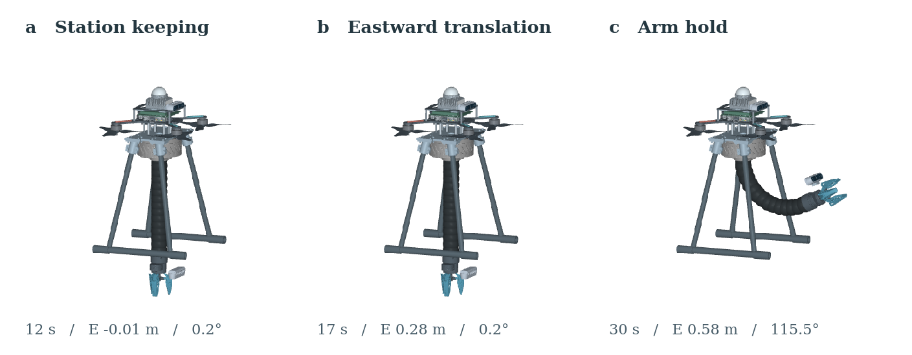

F · PX4 飞控闭环 / 2026-11-18 22:53（北京时间）
空中弯臂时，机身偏离定点多远？
最终自由飞行中，空载悬停误差 0.94 cm，弯臂期间三维均方根误差 11.25 cm，瞬时最大偏离 25.07 cm。PX4 原生四路电机记录已与实际施加推力对齐。
模型与场景

01自由飞行的三个实测仿真姿态
12、17 和 30 秒的模型均读取完整积分状态。相机随模型居中，E 给出机身相对起点的向东位移。

曲线与机制图

01弯臂期间的位置误差与前后电机推力
五个空心点分别对应同一条件下的五次飞行。右下是最终运行前、后两对旋翼每台的平均推力。
视频回放
0139 秒飞行回放
以两倍速播放。左侧是日志姿态，右侧为相对起飞点的固定东向–高度坐标，方框是请求、实心点是机身。
论文与报告
两页论文候选图
第一页呈现飞行任务与臂响应，第二页核对位置误差、俯仰控制与电机输出。独立组会预览。
数据及运行记录
PX4 原生 ULog
传感器、EKF2、飞行模式、飞控设定值与四路原生 PWM，可用 Flight Review 或 pyulog 打开。
ROS1 原生 bag
七个有时间戳的记录主题，包括仿真时钟、请求、EKF 遥测、控制输出、形态与评估真值。
MuJoCo 完整状态
50 Hz 的 qpos、qvel、ctrl、TCP 与旋翼推力，动作时间使用 HIL 微秒时钟。
逐帧飞控通讯与施加量
250 Hz。含原生 HIL 时间、传感器、四路电机、机身与臂请求和响应。
五次飞行逐段指标
悬停、平移、弯臂和恢复的三维 RMS、峰值与终点误差。包含两次超出弯臂阈值的原设置运行。
时间对齐与独立重建
核对 GPS 时钟、四路原生电机输出、bag 数值及广义坐标，并报告各记录的覆盖率。
逐项验收和文件校验值
每次运行的参数、验收布尔值、时间窗、重建误差与原文件 SHA-256。
运行前验收协议
悬停、平移与弯臂任务及预先登记的阈值。
组会讲稿与复现命令
讲图顺序、调通时的发现、模型假设、数据来源与下一轮单门对照。